2D platformer with dynamic shooting
Project Type: University
Software/Language Used: Unity / C#
A platformer that utilises forgiveness mechanics to create satisfying player control, combined with a dynamic shooting system and simple enemy AI. This project was inspired by the flash series Strike Force Heroes.
To create a fun platforming experience, satisfying player controls were a nessessity. To achieve this, I focused on the core movement mechanics and enhancing them with forgiveness mechanics, rather than focusing on having many secondary movement mechanics (such as wall jumping, dashing, etc).
The core movement comprises of A & D for left and right movement respectively alongside SPACE to jump. The movement uses forces and several forgiveness mechanics to create a more satisfying feel to the movement.
Below is the code for movement. A coroutine is used to apply the movement force to the player, using their move direction value times'd by an acceleration value. It then remains in a while loop until the move input is cancelled. This is then affected by a frictional force every physics update.
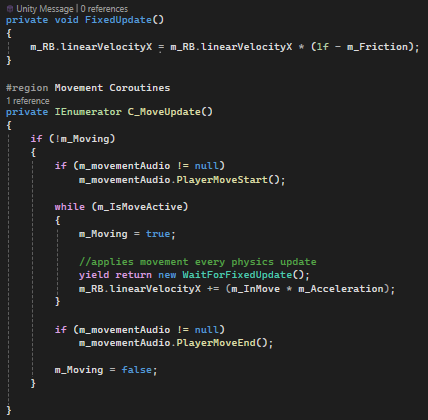
Below is the code for initiating a jump. A coroutine is used for the functionality of jumping (which is covered in another section) and is triggered from this function. It first has to account for jump buffering and then it checks if the player is already jumping, after which it then initiates a jump.
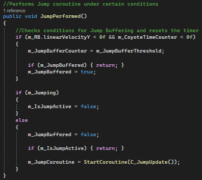
The player also has weapons that allow them to fend off enemies. These weapons will be discussed in another section but to accomadate them, the camera needed to be controlable and tied to the weapon aiming. I created a script to handle this and another to handle the reticle that represents the spread of the weapons fire.
The camera adjusts to the mouse position and slightly shifts in the direction of it (with respect to the players position). At the same time, the reticle changes size to account for the position of the mouse and the expcected spread of the weapons fire at said range.
Below is the code for mouse position updating the camera. It checks for any changes evey update and then calls a coroutine to handle the changed values. The coroutine gets the mouses position and takes it away from the player transform to get the difference between the two. Then it uses that distance by applys a stretch value to it and adjusting the cameras position by the result for each axis.
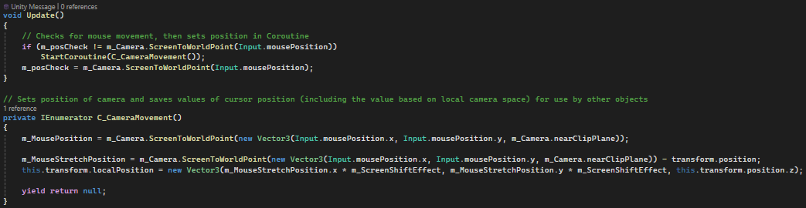
Below is the code for reticle sizing. It uses a public function from the camera script to get the mouses position and set its transform to it. It calculates the size change by using a spread value and the magnitude of the direction vector between the player and the camera position. This is then applied to the actors scale.
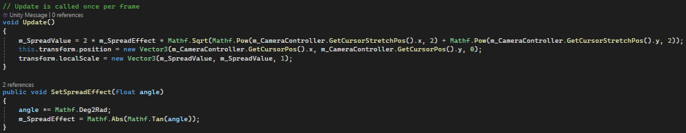
Lastly, the player can also interact with elements in the enviroment by pressing E (as shown in the video below).
Outside of this, the player has inisialiser and manager scripts that setup the communication of several scripts that make up the player.
Below is the code for the door interact script. This script inherits from an interface script, which allows the player to interact with the interface rather than each individual script while maintaining the individual functionality of each. The function for the door, for example, starts a coroutine that moves and then changes the colour of the door switch. Each of the other interactables have similar set ups.
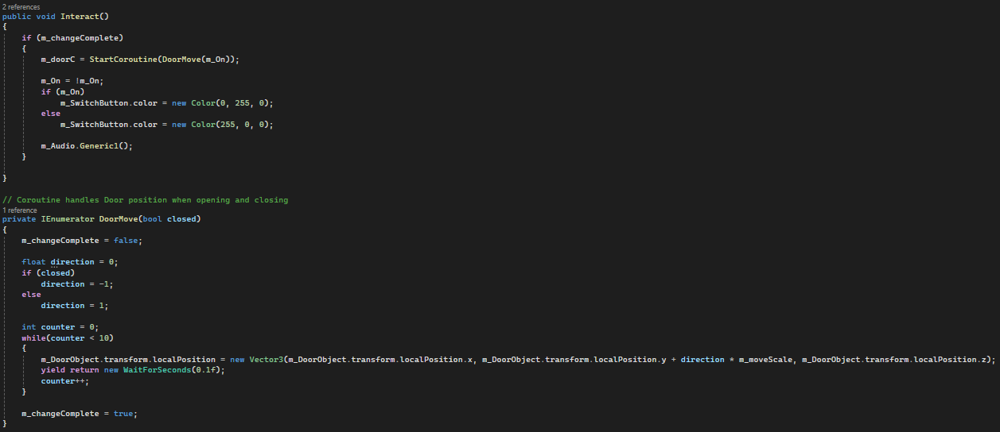
Below is the code for the console interactable. Audio for the interactables is handled by using another script that uses several functions to call certain audio triggers. These functions are then called in the interactables script.
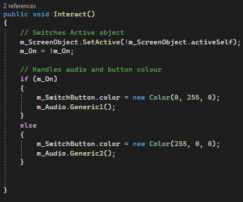
Below is the code for the player initialiser. The player initialiser gets all relevant player scripts and components and assigns variables in them, including setting up references between them.
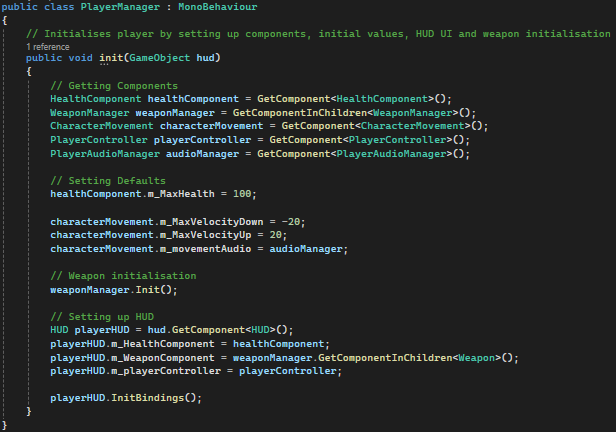
Below is code for the player weapon manager. This manager handles the inputs given that interact with the weapons, triggering certain functions where nessassary for audio, animation and more.
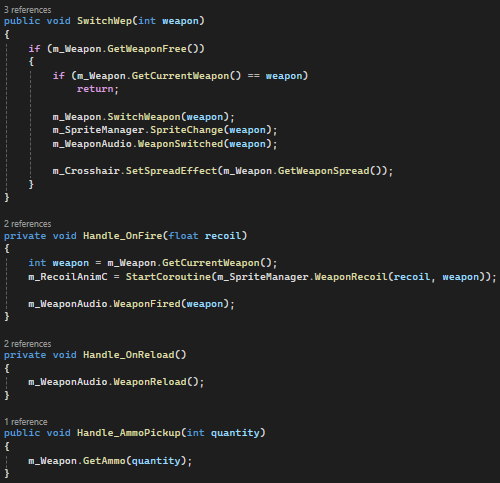
The player HUD presents all relevant information about the players health bar and weapon status. It presents the weapon equipped; the ammo, max ammo and extra ammo of the weapon and the reloading status of the weapon.
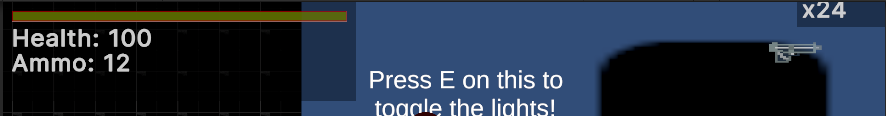
The HUD also has a blood effect that appears on screen when the player takes damage. This and the other HUD elements give the player vital feedback and make the gameplay feel more responsive.
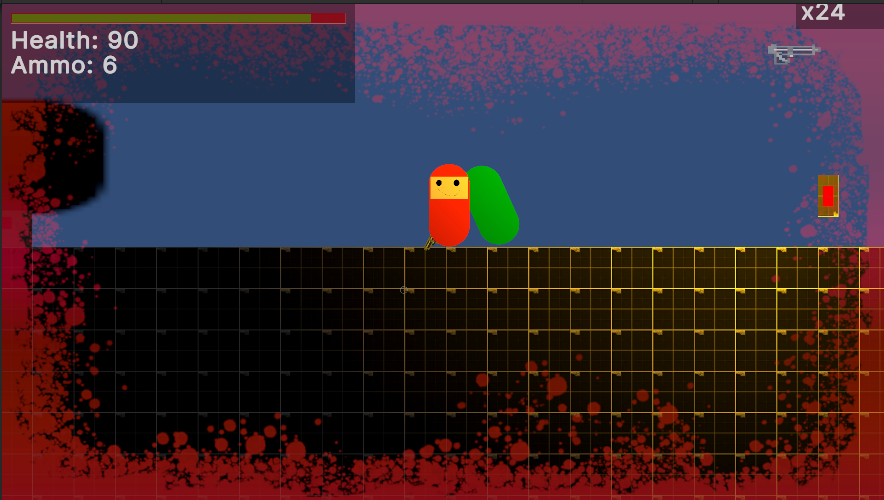
Below is a snippet of the code for the HUD. The mechanical aspects to the HUD are handled through functions that are called on certain triggers. These functions mostly involve changing the visibility of certain UI elements including calling a coroutine that handles the blood effect. The blood effect coroutine creates a UI element of the blood image and destroys it after a short period of time.
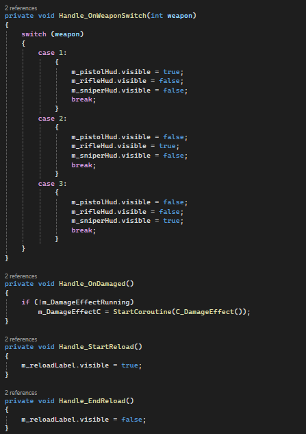
Below is a snippet of the code for binding UI elements to variables in the player scripts. The text element is set up and then a binding is created that gets the script containing the variable and the variables name and establishes how the the binding should work (in the case below, it is one way from the variable to the UI element). Then the binding is modified to a specific format and then binded to the UI element.
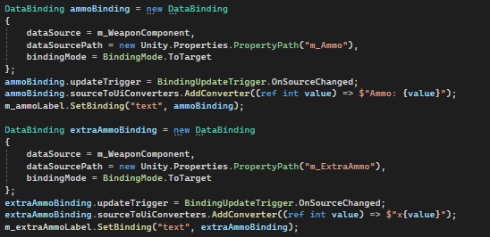
Below is a snippet of the code for the health component. The script handles the health variables through scripts that apply damage and check for when the actor is defeated. It uses events that actors can listen to so that other functionality unique to the actor can be triggered.
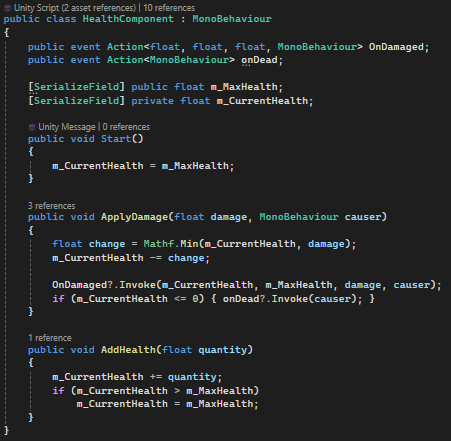
Below is a snippet of the code for the player handling damage and defeat events. When the player is defeated, the script loads the lose scene and sets the cursor to be visible.
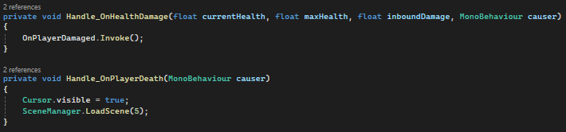
Below is the code for the ground checker. For the player to be able to trigger jumping, a check of when they are grounded is needed. This script handles this problem by using a raycast fired directly below the players sprite, setting a bool for when it is hitting an actor on the level layer or not. This is then grabbed by the players movement script through the use of a function that returns the bool. This is also used in a different script that checks for head collisions to stop the players jump.
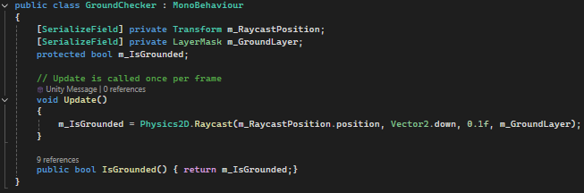
To create a satisfying feel to the movement controls, I added several forgiveness mechanics. Forgiveness mechanics attempt to bridge the gap between the player accuracy and the games accuracy. This can be done in several ways with player controls and with gameplay elements, which leads to a more enjoyable experience overall.
Cyote time is a forgiveness mechanic that makes jumping off of ledges easier. It give the player a brief window of time after leaving a ledge for the jump input to be made which makes it easier to perform jumps when moving from ledge to ledge.
Below is the code for the jump coroutine. The cyote time is checked for early on in the coroutine and if true, ensures that the condition of the jump are the same as being grounded (i.e. neutralises downward force and velocity).
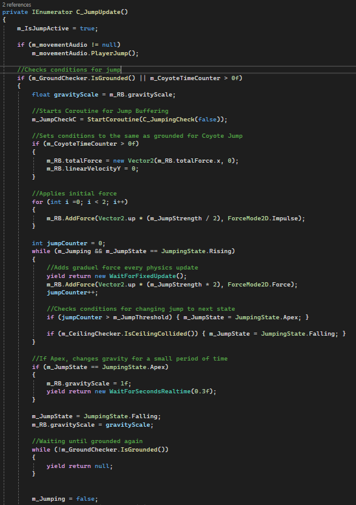
Below is the code for the coroutine that checks if a cyote time is performable. It checks if the player is falling and has not triggerd a jump, then decreacing a timer that is used to check if the jump was inputted in time.
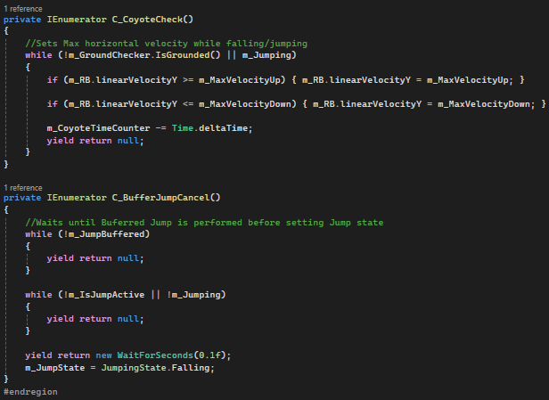
Below is the code for resetting cyote time. When the player collides with the ground the cyote timer is reset. The cyote timer can also be seen to start when the player exits a grounded collision.
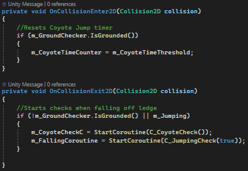
Jump buffering is a forgiveness mechanic that allows the player to input jumps slightly before touching the ground. This allows the player to feel more in control of their jumping as strict timing is no longer required.
The code below is the coroutine for jumping. When jumping the coroutine for jump buffering is started. It is also started when the player leaves a grounded collision with the level (falling of a ledge).
The code below is for cyote time and cancelling a buffered jump. As a buffered jump behaves slightly differently to normal jumps, it cannot be cancelled the same way if the player only taps the key rather than holding. This means a coroutine that waits for the buffered jump to be performed is needed so that the player trying to do small tap jumps doesn't perform a full height jump.'
The code below is for the coroutine that handles jump buffering. It has two functionalities. The first is when the player is falling. This handles the jump buffer timer, starting it when the jump key is pressed and reseting it for each press (all as long as the player is falling and not yet grounded). The second handles the triggering of a buffered jump. It waits until the player is grounded and then checks if the buffered jump time is in the acceptance margin, before then calling the jump coroutine.
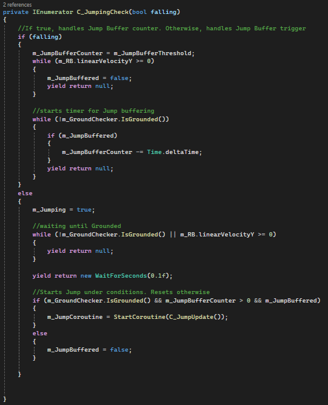
Variable jump height is a forgiveness mechanic that allows the player to achieve different jump heights depending on how long the jump key is pressed for. This is a staple of platforming games and make the player once again feel in control of their character. It also pairs well with vertical speed clamping which ensures that the vertical speeds don't reach problamatic values (especially on falling speeds as they can lead to the player falling through the level).
Below is the code for the jump coroutine. The variable height is handled through the jump itself. The jump starts with an initial force and consists of 3 states (rising, apex and falling) that have different functionality.
In rising, the player has a gradual force applied to them to keep their upwards velocity as well as checks for if the player hits something above them. In the case that they do, the jump moves straight to the falling state.
In the apex state, the player has reduced gravity with a small wait. This gives the jump a satisfying feel, allowing the player to comfortably make certain jumps and feel the impact of the jump itself.
Lastly, the falling state resets the players gravity and waits until they reach the ground before ending the jump.
The variable height comes from the rising state as depending on how long the player holds the jump for, the rising state can have a longer or shorter impact on the jump and ultimate height it reaches.
Below is the code for cancelling a jump. To ensure the jump has variable height the jump needs to be canncellable from any point while rising. This function is called when the input is no longer being recieved and sets the jump to its falling state.
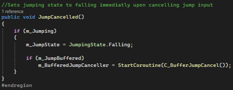
For this project, I created a weapon system for the player to combat enemies. It features 3 different weapons, established through a struct, and a dynamic aiming system that accounts for the spread of the weapon. This section will go over the functionality of the weapon and the different weapons themselves (to learn about the reticle and camera control, look towards the bottom of the Player Controls section).
The weapons are as follows:
Below is the code for the weapon structs. These structs include the name of the weapon and all stats that relate to the weapons firing including recoile for animations and the projectile prefab so that different projectiles can be fired. Then the 3 weapons are constructed below. The ammo is handled in a seperate set of arrays but the maximums are established in the structs.
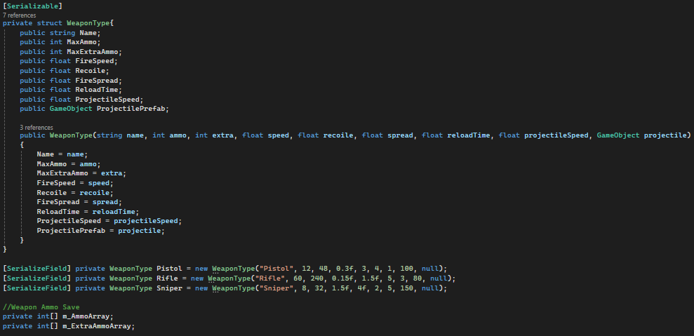
Below is the code for the weapon firing. First a function is called that checks the condition of the weapon (if it is already firing or reloading) and then calls the fire coroutine. This coroutine starts a loop that invokes the fire animation and handles the projectile spawning and set up as long as there is ammo. When the loop ends, the ammo is checked and if there is none but there is extra ammo, the reloading function is called.
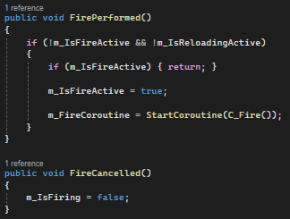
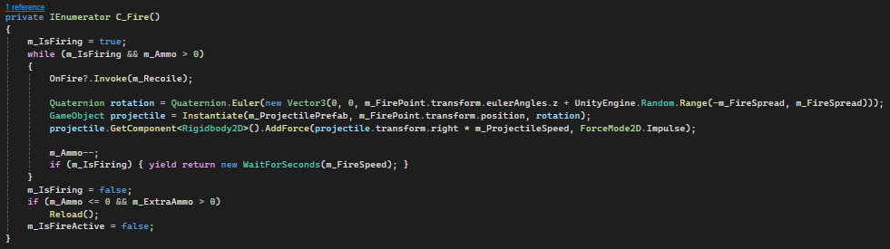
Below are the function for getting ammo and starting reloading, along with the reloading coroutine. As reloading can be triggered at any time by pressing R, ammo reload and gain needs to account for the maximums of each. So, the function/coroutine use loops that incrementally add ammo or convert ammo from extra to regular. The reload coroutine also invokes events to trigger the HUD indication of reloading.
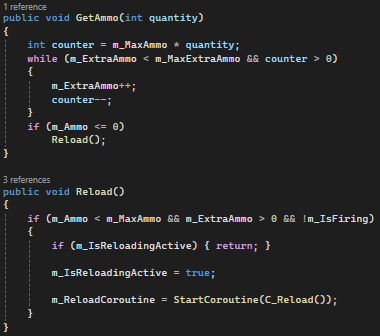
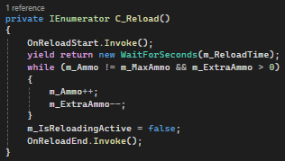
Beload is the function for weapon switching. Weapons are switched by invoking an event to change the sprite and HUD details, then storing the current ammo & extra ammo and then changing the stats of the weapon to that of the new one.
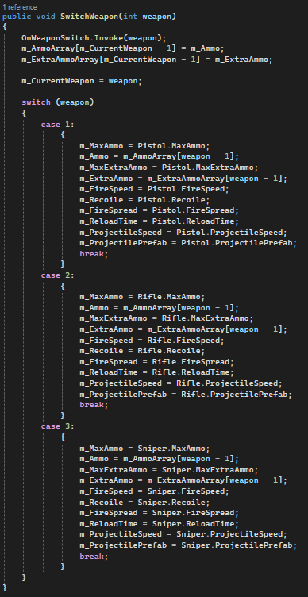
Below is the code for the projectile collisions. When a projectile collides with another actor, it first trys to get its health component. Then applies the damage and checks its piercing value to see if it needs to despawn or not before finally destroying itself.
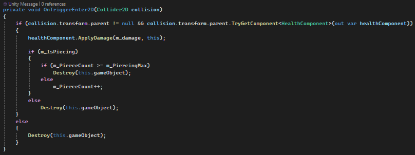
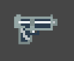
The pistol is the most basic weapon. It has a decent fire rate and fire spread, low ammo and decent damage. It's projectiles do not pierce and have a yellow glow.
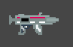
The rifle is a fast firing weapon with a large spread. Because of this, it has a larger ammo capacity and does slightly less damage than that of the pistol. It's projectiles also do not pierce and have an orange glow.
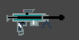
The sniper is the strongest weapon with high accuracy and damage for the trade off of slower fire rate and smaller ammo capacity. It has piercing bullets that can hit up to 3 enemies, but due to it's projectile speed, it sometimes misses enemies when fired. It's bullets have a white glow.
Below is the code for the weapon sprite manager. The animations are achieved through local rotation and transformations to give off the appearence of recoil. The manager has functions for changing the appearence of the sprite, flipping the sprite and the recoil animation itself. For the animation, each weapon can have a slight rotation or transformation.
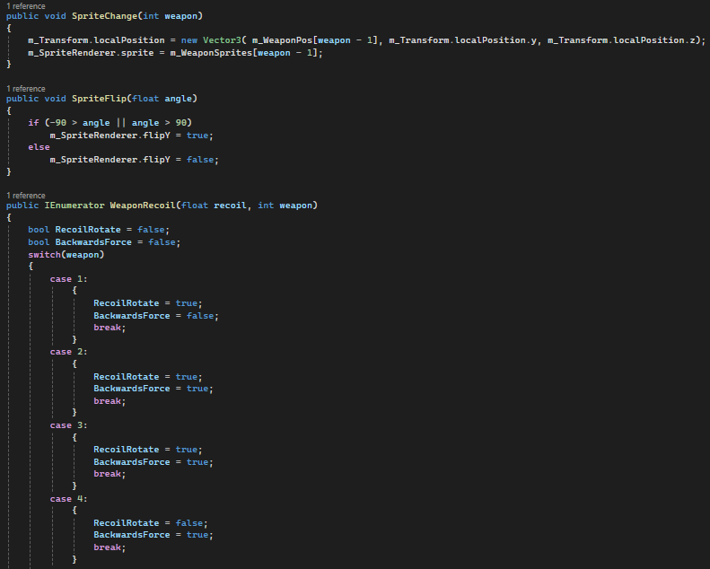
Below is the code for the weapon recoil animation. The animation is handled in two parts. First the weapon is rotated & transformed backwards before being returned to normal by following the same changes in the opposite direction. This is handled with two while loops that check for maximums being reached before exiting out.
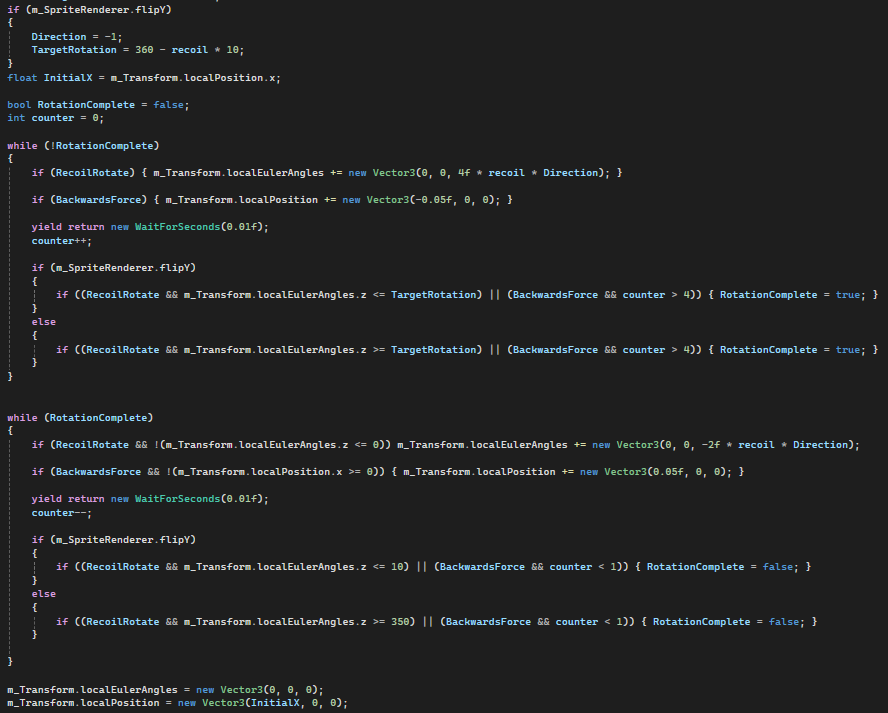
Below is the code for triggering sprite flipping. For the weapon to be presented properly, the sprite has to be flipped when facing to the left. This is achieved by a script that sets the rotation of the weapon around the player and triggers the sprite flip each time the rotation changes.
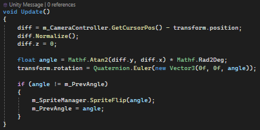
Below is the code for weapon audio. Audio is handled by functions that uses switch statements to trigger the audio for the associated weapon.
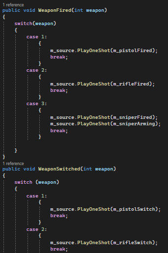
The enemy AI uses a sort of finite-state machine to make decisions. My goal was to create an enemy that felt connected to the game world and provided a small challenge to the player. This was done by mimicing the players movement and adding attacking and animations to the AI.
The enemies start by roaming around their area (that can be assigned in the editor) until they get sight of an enemy (or get shot by them). Then the enemy moves to a chase state that navigates the enemy towards the player. Then, when in range, the enemy move to the attack state where they do damage to the player. Lastly, if the enemy loses sight of the player, they go into the seek state that navigates the player to the last position the player was seen in.
To organise this, I split movement, animation and combat for the enemy into their own scripts. This allowed for each to be simplified and work in tandem to achieve a simple enemy AI.
Below is the states for the enemy AI. These control how the enemy acts in the game.
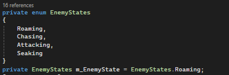
Below is the logic for the enemy AI. A while loop is used to keep cyckling through the state transitions and functionality. First, transitions to chasing and seeking are handled by useing values from the comabt script. Then, the logic for each state is handled, with the movement and animation scripts being called for as needed. Roaming movement is handled on a counter, allowing the target position to be reset every so often. Chasing uses the players position as its target for movement, while seeking lets the last position the AI was seeking to be its target until the state changes. The attack state functions almost identically to the chase state but stes the movement state to attacking which make the enemy slow down slightly.
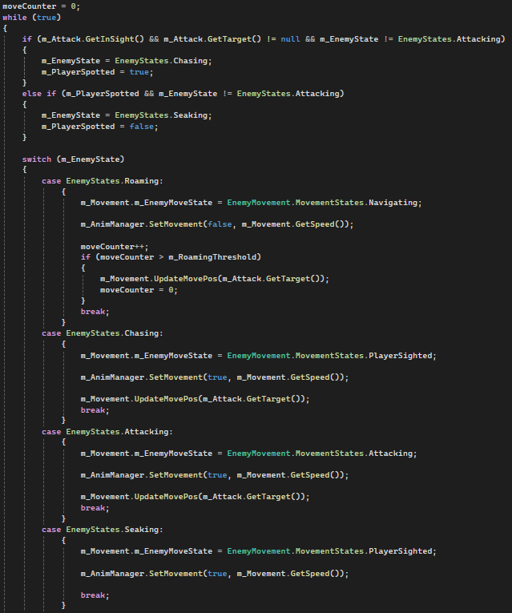
Below is several functions in the logic script for the AI. The enemy also uses several different functions to communicate across its various scripts. These functions handle audio triggers, variables for the enemy state and direction and some function triggering for other scripts.
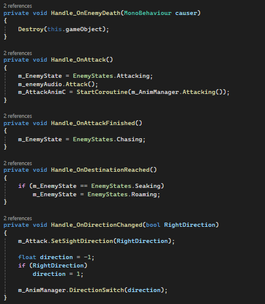
Below are the enemy movement states. These control how movement for the enemy functions.
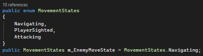
Below is a function that handles the target movement position. First, the movement state is checked and then the enemy movement type. Then, the target positions are assigned using the variables which values are assigned in editor. If the enemy is not in the navigating movement state, then the target is the player and the position is set accordingly. Lastly, the direction is checked at the end of the function and changed accordingly.
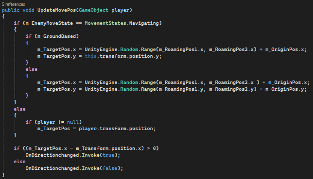
Below is the function that calls the movement coroutine. The direction and movement status are first checked before the coroutine is called.
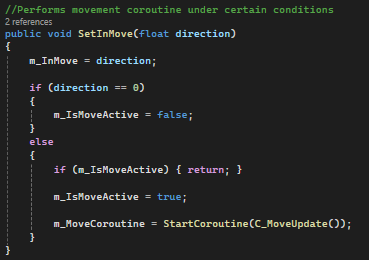
Below is the fixed update for the enemy movement script. First, a check of if the enemy can move and is far enough from their target position is performed before continuing to set the direction, add force and call a coroutine to clamp the enemies speed. The enemy also has jumping which is handled by a counter that increments if the enemy has not move a significant distance and is not at its target position. The clamping speed coroutine checks the state of the enemies movement and then sets the speed accordingly if it is over the limit (which is halfed for the attack state).
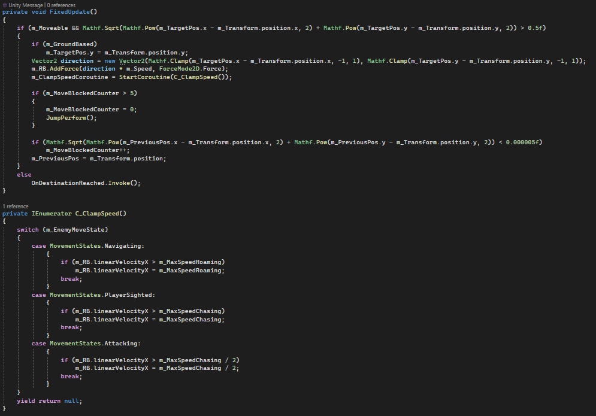
Below is the code for enemy jumping. Jumping is triggered by a function and handled by a coroutine. The goal of this set up is to mimic the players jumping to make the enemy and player feel connected to the game world (and ensure fairness in the eyes of a player). The jump starts with an initial force, followed by a small rising period in which force is applied continually, which then leads into a falling period in which the coroutine waits until the enemy is touching the ground again. Many aspects to this are coppied over from the player jump functionality.
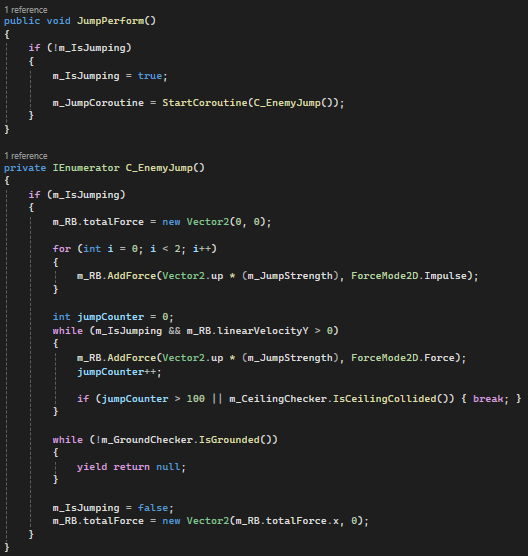
Below is the code for the enemies sight. To make the enemies feel alive in the game, I gave them sight. This was achieved through the use of a raycast that was fired from a position set for their eye line. The raycast would only be performed if the player entered their ranger of vision (handled though a circular tigger collider) and would spicifically check for line of sight.
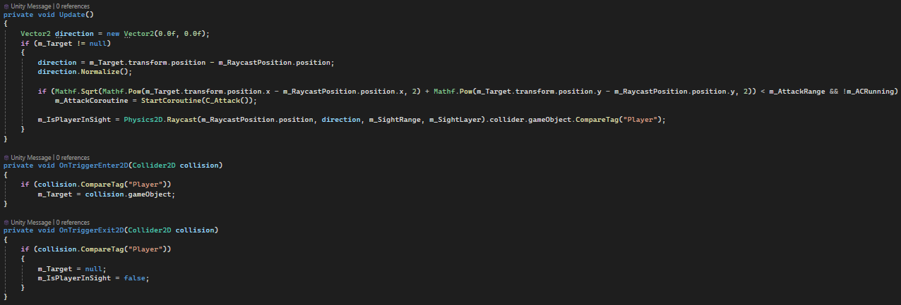
Below is the coroutine for the enemy attack. The coroutine start a loop that would try to get the targets health component to the ncause damage and then wait for a cooldown timer. The loop runs until there is no longer a target or the target is out of range.
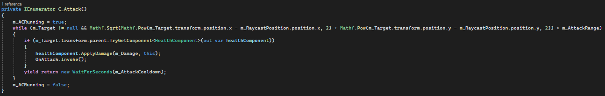
Below is the code for the enemies animation. The animation is simple (being only a small rotation for movement and a larger one for attacking) and the values for them are handled through functions as seen below. These functions are called by the enemy animation manager when called for by the enemies logic script.
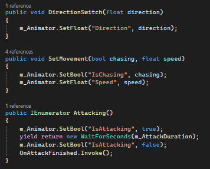
While the gameplay mechanics are inspired by Strike Force Heroes, the level takes inspiration from the Metroid series and creates a sort of metroidvania experience. For the most part though, it serves to show off the mechanics made and serves as an introductory level to what would be a full game.
For the sake of simplicity, the level has been broken down into 6 sections that all follow along each other. (Please note: the images do not cover the entire level, as some transitional areas have been skipped to focus on major parts of the level.)
The start of this level features a series of rooms that gradually introduce mechanics to the player such as jumping, interacting and shooting. It ends in a combat section that lets the player get a feel for the enemies before more are introduced, giving them some experience to rely upon.
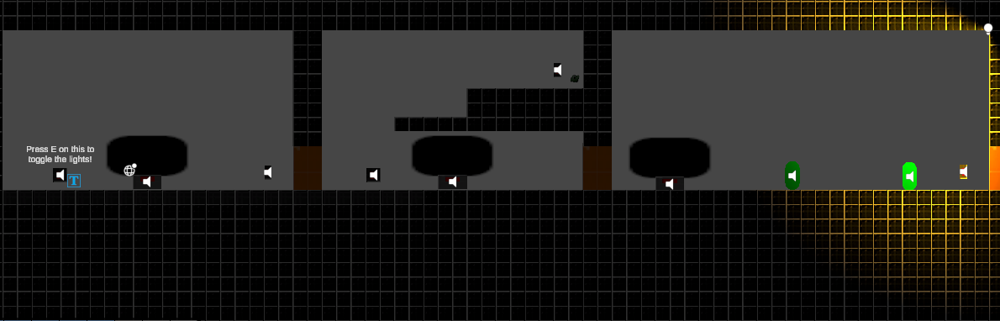
The next part of this level introduces the metroidvania aspect, with a door on the upper path that cannot be opened until the player locates the switch in a different area of the level. The lower path leads further into the level, with a small combat section that also gives players an idea about the variable jump height mechanic. (Although, the enemies in this section do get stuck unintentionally, making it worse than intended.)
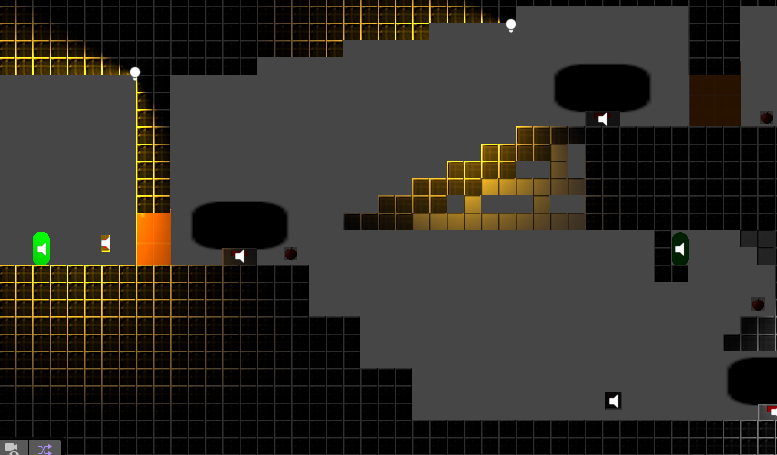
The 3rd section of the level, showcases the jump buffering mechanic and has a nasty punishment of enemies and spikes if the player falls, which rewards careful platforming). This section also introduces switching weapons with the console at the end of challenge.
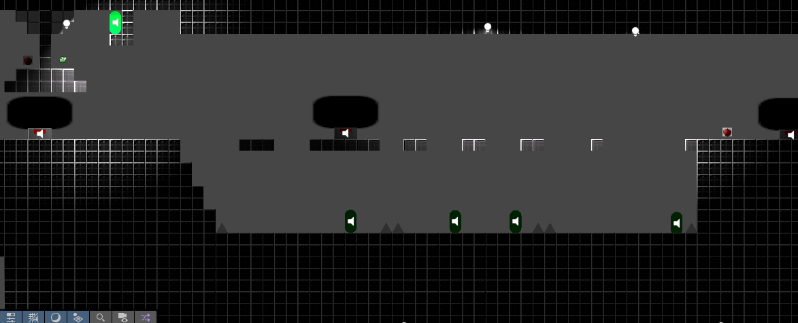
This section is right below the 3rd one and functions as a gautlet of enemies for the player to try the different weapons on. The lighting and doors add to the intimidating atmosphere and make this section the most tense in the level.
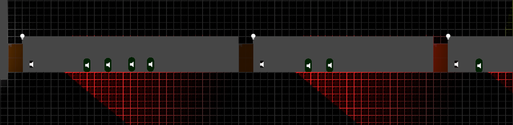
Section 5 acts as more of a platforming challenge that also shows off the cyote time mechanic. It also features a hidden set of pick ups and some enemies to keep the level interesting. At the end of this section, there is a switch to the door in section 2 which allows the player to progress to the final area.
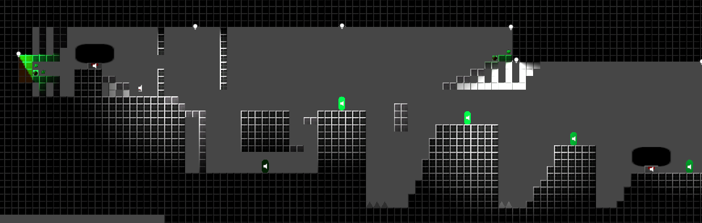
The final section is a series of challenging jumps with enemies and spikes between each one as one final challenge to the player. After which, there is some jumps that lead up to the end of the level (plus a drop that leads to the end of section 3 as a small troll that may relive the player of tension after the final challenge).
The menus have been designed to be simple in servies of the prototype. They have functionality to transision between scenes and close the game.
The code allows the menus to transition the scene through the events triggered when clicking on button elements.
The project also features a game manager that handles the various scenes loaded into the level asynchonosly and set up the parenting for the weapon actor to the player.
A smaller aspect to the project is the pick ups. These provide health and ammo respectively to the player and are coded with simplicity. The pick ups delete themselves when they are told they are collected and the player script handles the collision and triggering of functions to gain health and ammo before telling the pick up it is collected.
If you want to message me, please do so here: coreygfives@gmail.com, I'll be sure to respond as quick as possible!
Also, you can find me on YouTube CoolCloneG, I sometimes make videos!